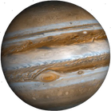
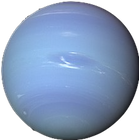

Pianeti precedenti la Fascia di Kuiper
Giove

- Perielio: 740 742 598 km
- Afelio: 816 081 455 km
- Circonferenza Orbitale: 4 888 000 000 km
- Periodo Orbitale: 4 333,2867 giorni
- Velocità Orbitale media: 13,056 km/s
- Satelliti: 95
- Superficie: 6,1418738571 x1010 km2
- Volume: 1,43128 x1024 m3
- Massa: 1,89819 x1027 kg
Saturno
- Perielio: 1 352 550 000 km
- Afelio: 1 515 500 000 km
- Circonferenza Orbitale: 8 447 660 938 km
- Periodo Orbitale: 29,45 anni
- Velocità Orbitale media: 9,68 km/s
- Satelliti: 146
- Superficie: 4,26 x1016 m2
- Volume: 8,27 x1023 m3
- Massa: 5,6834 x1026 kg
Urano
- Perielio: 2 741,3 x106 km
- Afelio: 3 003,62 x106 km
- Circonferenza Orbitale: 18 029 000 000 km
- Periodo Orbitale: 84,011 anni
- Velocità Orbitale media: 6,80 km/s
- Satelliti: 27
- Superficie: 8,1156 x109 km2
- Volume: 6833 x1010 km3
- Massa: 86,813 x1024 kg
Nettuno

- Perielio: 4 459 631 496 km
- Afelio: 4 536 874 325 km
- Circonferenza Orbitale: 28 263 000 000 km
- Periodo Orbitale: 60 223,3528 giorni
- Velocità Orbitale media: 5,432 km/s
- Satelliti: 14
- Superficie: 7,619 x1015 m2
- Volume: 6,254 x1022 m3
- Massa: 1,0243 x1026 kg